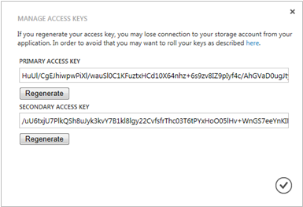

When geo-replication is turned on for a storage account, the stored content is replicated to a secondary location to enable failover to that location in case of a major disaster in the primary location. The secondary location is in the same region, but is hundreds of miles from the primary location. This is the highest level of storage durability, known as geo redundant storage (GRS). Geo-replication is turned on by default.
If you turn off geo-replication, you have locally redundant storage (LRS). For locally redundant storage, account data is replicated three times within the same data center. LRS is offered at discounted rates. Be aware that if you turn off geo-replication, and you later change your mind, you will incur a one-time data cost to replicate your existing data to the secondary location.
For more information about geo-replication, see Introducing Geo-Replication for Windows Azure Storage. For pricing information, see Pricing Details.
In the Windows Azure Preview Management Portal, click Storage, and then click the name of the storage account to open the dashboard.
Click Configure.
Beside Geo-Replication, click On or Off.
Click Save.
When you create a storage account, Windows Azure generates two 512-bit storage access keys, which are used for authentication when the storage account is accessed. By providing two storage access keys, Windows Azure enables you to regenerate the keys with no interruption to your storage service or access to that service.
In the Management Portal, use Manage Keys on the dashboard or the Storage page to view, copy, and regenerate the storage access keys that are used to access the Blob, Table, and Queue services.
You can use Manage Keys to copy a storage access key to use in a connection string. The connection string requires the storage account name and a key to use in authentication. For information about configuring connection strings to access Windows Azure storage services, see Configuring Connection Strings.
In the Management Portal, click Storage, and then click the name of the storage account to open the dashboard.
Click Manage Keys.
Manage Access Keys opens.

To copy a storage access key, select the key text. Then right-click, and click Copy.
You should change the access keys to your storage account periodically to help keep your storage connections more secure. Two access keys are assigned to enable you to maintain connections to the storage account using one access key while you regenerate the other access key.
Regenerating your access keys affects virtual machines, media services, and any applications that are dependent on the storage account.
Virtual machines - If your storage account contains any virtual machines that are running, you will have to redeploy all virtual machines after you regenerate the access keys. To avoid redeployment, shut down the virtual machines before you regenerate the access keys.
Media services - If you have media services dependent on your storage account, you must re-sync the access keys with your media service after you regenerate the keys.
Applications - If you have web applications or cloud services using the storage account, you will lose the connections if you regenerate keys, unless you roll your keys. Here is the process:
Update the connection strings in your application code to reference the secondary access key of the storage account.
Regenerate the primary access key for your storage account. In the Management Portal, from the dashboard or the Configure page, click Manage Keys. Click Regenerate under the primary access key, and then click Yes to confirm you want to generate a new key.
Update the connection strings in your code to reference the new primary access key.
Regenerate the secondary access key.
To remove a storage account that you are no longer using, use Delete on the dashboard or the Configure page. Delete deletes the entire storage account, including all of the blobs, tables, and queues in the account.
There's no way to restore the content from a deleted storage account. Make sure you back up anything you want to save before you delete the account.
In the Management Portal, click Storage.
Click anywhere in the storage account entry except the name, and then click Delete.
-Or-
Click the name of the storage account to open the dashboard, and then click Delete.
Click Yes to confirm you want to delete the storage account.